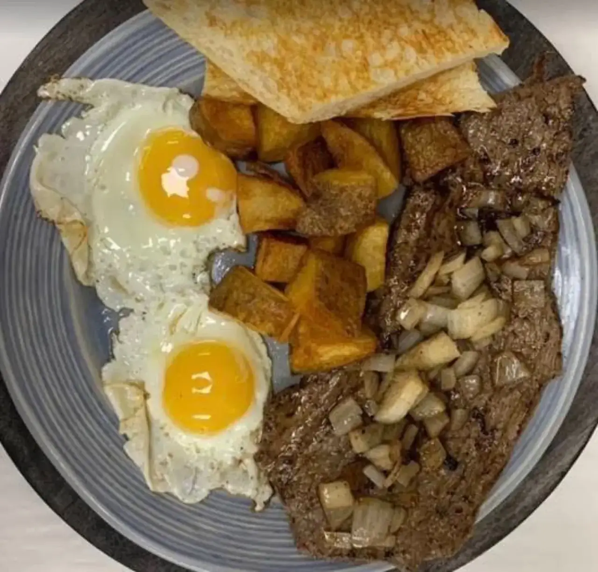

Cuban sandwiches
Pressed Cuban sandwiches. Also a Palomilla steak sandwich, a Mity Burger and the Garlic Goodness.
Mity Nice Cafe · Carrollwood
Mity Nice Cafe serves Carrollwood from Tampa.
Mity Nice Cafe is based in Tampa and works with customers from Carrollwood. Call (813) 886-4766 to ask about timing and directions.
What to order first
Cuban sandwiches, breakfast and coffee.
Pressed Cuban sandwiches. Also a Palomilla steak sandwich, a Mity Burger and the Garlic Goodness.

Eggs, potatoes and steak on a plate.

Cafe con leche, and cappuccinos poured with a leaf on top.
4.7 ★ · 564 Google reviews
GUEST CHECK№ 1I loved the quality of the food. My first visit I ordered the burger and chicken soup. It tasted homemade. I came back the next day and had breakfast. The Cuban sandwich has to be the best I’ve had in Tampa. Glad I found this spot.
GUEST CHECK№ 2Stopped in for lunch and it was great! Joe provided us with some great suggestions for our first time. We each got something different. Everything was delicious but the winner was the Garlic Goodness! Melty cheese yum! Palomilla Steak sandwich and Mity Burger came in close 2nd. Got cuban to take home.We will definitely be back and sharing this place with our friends!
GUEST CHECK№ 3The cafe con leche was literally so perfect. Not too hot. No to bitter, just right amount of sugar. The food was hot and delicious and didn't take long after all!
GUEST CHECK№ 4Food was excellent, cappuccino was delicious! Very clean and comfortable atmosphere. We ordered pizza to-go, which also is Amazing!